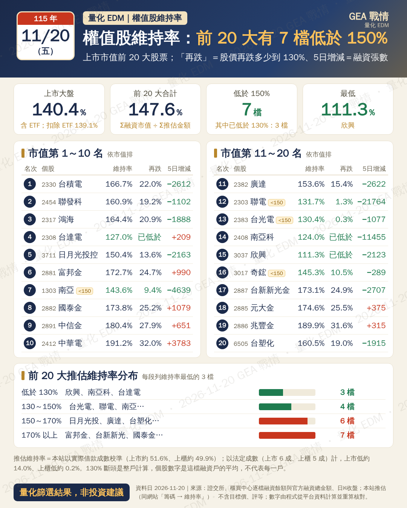
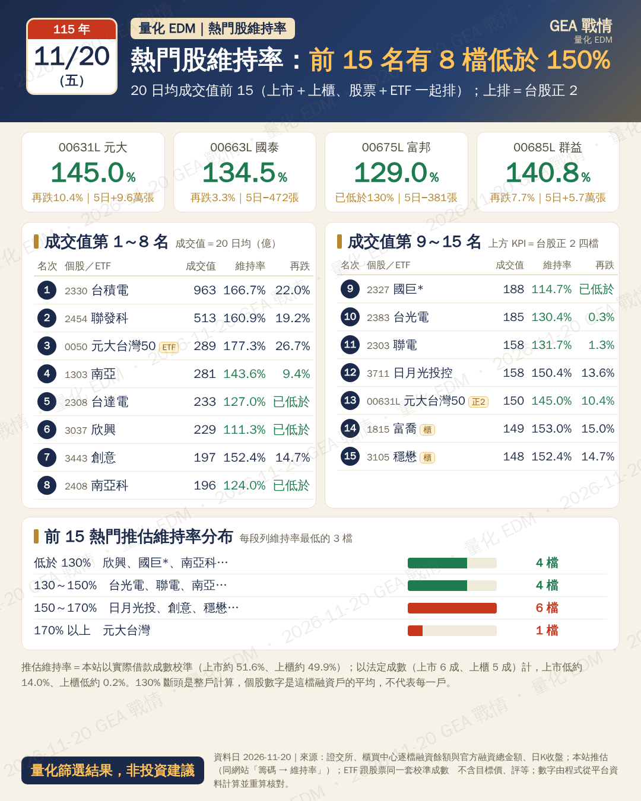
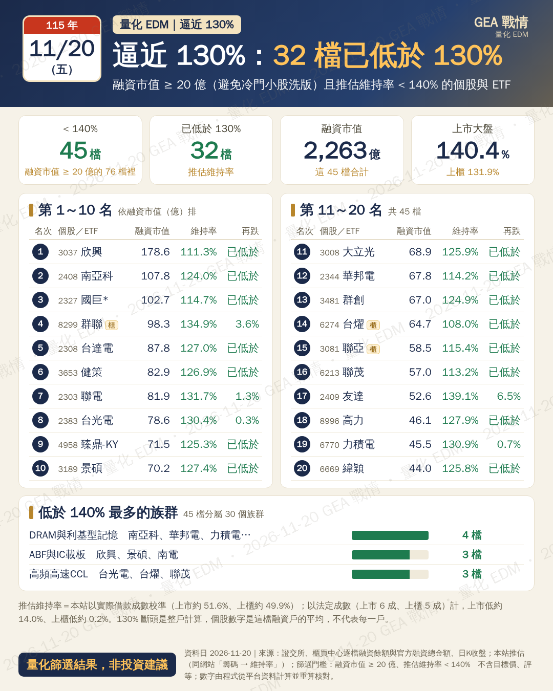
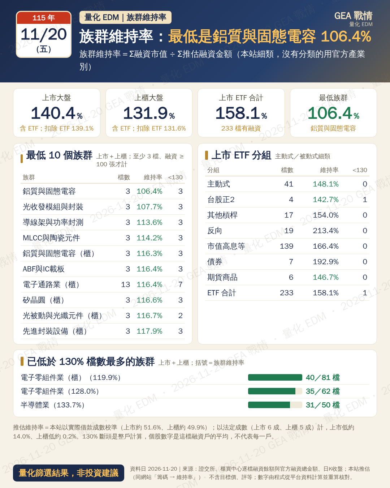
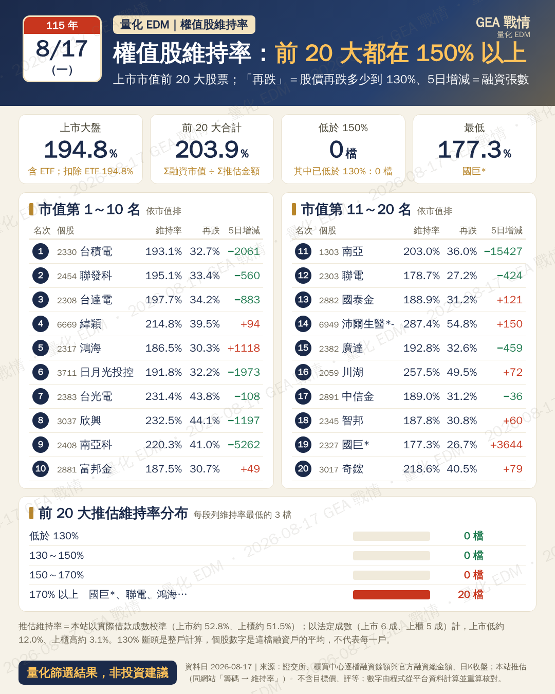

權值股維持率・今天（2026-11-20）下載 PNG

核對通過 20 檔逐列核對：融資張數對 data/margin_full 原始餘額、收盤對 daily.npz、融資市值重算、市值＝company.json 股數×收盤、成交值＝daily.npz 20 日均、近 5 日增減對 5 個交易日前原始餘額、維持率＝融資市值÷推估金額＝法定成數計×法定÷校準；大盤：全市場推估金額合計對官方融資總金額、含／扣除 ETF 對 mkt_overlay.json（stock_maint 自身驗證標「未過」，照實標）；版面：每張表列數齊全、沒超出 1080×1350
・正式版同一段 build()，讀 docs/data/stock_maint.json（網站「籌碼 → 維持率」同一份）
熱門股維持率・今天（2026-11-20）下載 PNG

核對通過 19 檔逐列核對：融資張數對 data/margin_full 原始餘額、收盤對 daily.npz、融資市值重算、市值＝company.json 股數×收盤、成交值＝daily.npz 20 日均、近 5 日增減對 5 個交易日前原始餘額、維持率＝融資市值÷推估金額＝法定成數計×法定÷校準；大盤：全市場推估金額合計對官方融資總金額、含／扣除 ETF 對 mkt_overlay.json（stock_maint 自身驗證標「未過」，照實標）；版面：每張表列數齊全、沒超出 1080×1350
・正式版同一段 build()，讀 docs/data/stock_maint.json（網站「籌碼 → 維持率」同一份）
逼近 130%・今天（2026-11-20）下載 PNG

核對通過 20 檔逐列核對：融資張數對 data/margin_full 原始餘額、收盤對 daily.npz、融資市值重算、市值＝company.json 股數×收盤、成交值＝daily.npz 20 日均、近 5 日增減對 5 個交易日前原始餘額、維持率＝融資市值÷推估金額＝法定成數計×法定÷校準；大盤：全市場推估金額合計對官方融資總金額、含／扣除 ETF 對 mkt_overlay.json（stock_maint 自身驗證標「未過」，照實標）；版面：每張表列數齊全、沒超出 1080×1350
・正式版同一段 build()，讀 docs/data/stock_maint.json（網站「籌碼 → 維持率」同一份）
族群維持率・今天（2026-11-20）下載 PNG

核對通過 族群維持率 10 個、ETF 分組 8 組用個股／ETF 列重算（Σ融資市值 ÷ Σ推估金額、檔數、<130 檔數）；大盤：全市場推估金額合計對官方融資總金額、含／扣除 ETF 對 mkt_overlay.json（stock_maint 自身驗證標「未過」，照實標）；版面：每張表列數齊全、沒超出 1080×1350
・正式版同一段 build()，讀 docs/data/stock_maint.json（網站「籌碼 → 維持率」同一份）
權值股維持率・2026-08-17（③ 不成立那天的對照）下載 PNG

核對通過 20 檔逐列核對：融資張數對 data/margin_full 原始餘額、收盤對 daily.npz、融資市值重算、市值＝company.json 股數×收盤、成交值＝daily.npz 20 日均、近 5 日增減對 5 個交易日前原始餘額、維持率＝融資市值÷推估金額＝法定成數計×法定÷校準；大盤：全市場推估金額合計對官方融資總金額、含／扣除 ETF 對 mkt_overlay.json；版面：每張表列數齊全、沒超出 1080×1350
・同一段 build()，用 site_tools/stock_maint.build() 把日K截到 2026-08-17 重算（只截資料、不改算法）